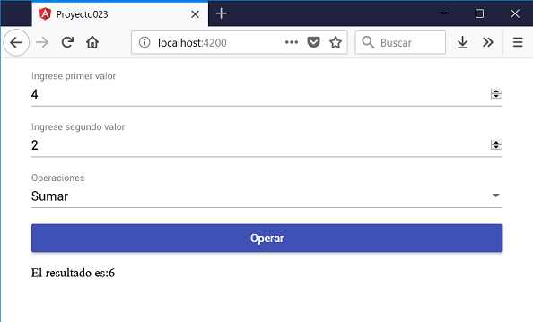

Otra etiqueta común en un formulario son los mat-select que provee la misma funcionalidad de la etiqueta nativa de HTML <select"> pero con las ventajas de estilos y animaciones de Material Design.
Definir un formulario web que permita cargar dos valores numéricos y mediante una componente 'mat-select' indicar si queremos sumar, restar, multiplicar o dividir los valores ingresados. Efectuar la operación al presionar un botón.
Crearemos primero el proyecto
ng new proyecto023
Procedemos a instalar todas las dependencias de Angular Material ayudados por Angular CLI mediante el comando 'add':
ng add @angular/material
Modificamos el archivo 'app.module.ts' donde debemos importar los módulos de Angular Material que requiere nuestro proyecto:
import { BrowserModule } from '@angular/platform-browser';
import { NgModule } from '@angular/core';
import { AppComponent } from './app.component';
import { BrowserAnimationsModule } from '@angular/platform-browser/animations';
import { FormsModule } from '@angular/forms';
import { MatInputModule } from '@angular/material/input';
import { MatButtonModule } from '@angular/material/button';
import {MatFormFieldModule} from '@angular/material/form-field';
import { MatSelectModule } from '@angular/material/select';
@NgModule({
declarations: [
AppComponent
],
imports: [
BrowserModule,
BrowserAnimationsModule,
FormsModule,
MatInputModule,
MatButtonModule,
MatFormFieldModule,
MatSelectModule
],
providers: [],
bootstrap: [AppComponent]
})
export class AppModule { }
Como vemos aparece el nuevo módulo MatSelectedModule.
Modificamos el archivo 'app.component.ts' con la lógica de nuestra componente que permita operar los dos valores ingresados dependiendo de la selección del mat-select:
import { Component } from '@angular/core';
@Component({
selector: 'app-root',
templateUrl: './app.component.html',
styleUrls: ['./app.component.css']
})
export class AppComponent {
valor1!:number;
valor2!:number;
resultado!:number;
operaciones = [
{valor:'suma', muestraValor:'Sumar'},
{valor:'resta', muestraValor:'Restar'},
{valor:'multiplicacion', muestraValor:'Multiplicar'},
{valor:'division', muestraValor:'Dividir'}
];
seleccionada: string = this.operaciones[0].valor;
operar() {
switch (this.seleccionada) {
case 'suma' : this.resultado = this.valor1 + this.valor2;
break;
case 'resta' : this.resultado = this.valor1 - this.valor2;
break;
case 'multiplicacion' : this.resultado = this.valor1 * this.valor2;
break;
case 'division' : this.resultado = this.valor1 / this.valor2;
break;
}
}
}
Codificamos la interfaz visual en el archivo 'app.component.html':
<div class="contenedor">
<mat-form-field>
<input matInput [(ngModel)]="valor1" type="number" placeholder="Ingrese primer valor">
</mat-form-field>
<mat-form-field>
<input matInput [(ngModel)]="valor2" type="number" placeholder="Ingrese segundo valor">
</mat-form-field>
<mat-form-field>
<mat-select placeholder="Operaciones" [(ngModel)]="seleccionada" name="operacion">
<mat-option *ngFor="let op of operaciones" [value]="op.valor">
{{op.muestraValor}}
</mat-option>
</mat-select>
</mat-form-field>
<button mat-raised-button color="primary" (click)="operar()">Operar</button>
<p>El resultado es:{{resultado}}</p>
</div>
El último archivo que debemos codificar es la hoja de estilo de la componente que se encuentra en 'app.component.css':
.contenedor {
display: flex;
flex-direction: column;
margin:1rem auto;
max-width: 600px;
}
Si ejecutamos ahora la aplicación podemos comprobar cual es la estética de la componente mat-select:
Podemos probar esta aplicación en la web aquí.
En el archivo 'app.component.html' definimos el selector 'mat-select' contenido dentro de un mat-form-field:
<mat-form-field>
<mat-select placeholder="Operaciones" [(ngModel)]="seleccionada" name="operacion">
<mat-option *ngFor="let op of operaciones" [value]="op.valor">
{{op.muestraValor}}
</mat-option>
</mat-select>
</mat-form-field>
En el archivo 'app.component.ts' definimos un vector que almacena cuatro objetos indicando el valor a mostrar dentro de la componente mat-select y el valor asociado a dicha opción:
operaciones = [
{valor:'suma', muestraValor:'Sumar'},
{valor:'resta', muestraValor:'Restar'},
{valor:'multiplicacion', muestraValor:'Multiplicar'},
{valor:'division', muestraValor:'Dividir'}
];
seleccionada: string = this.operaciones[0].valor;
El atributo 'seleccionada' almacena el valor por defecto que debe mostrarse seleccionado dentro del mat-select.
En el archivo 'app.module.ts' importamos todos los módulos necesarios para trabajar con este formulario de Material:
import { FormsModule } from '@angular/forms';
import { MatInputModule } from '@angular/material/input';
import { MatButtonModule } from '@angular/material/button';
import {MatFormFieldModule} from '@angular/material/form-field';
import { MatSelectModule } from '@angular/material/select';